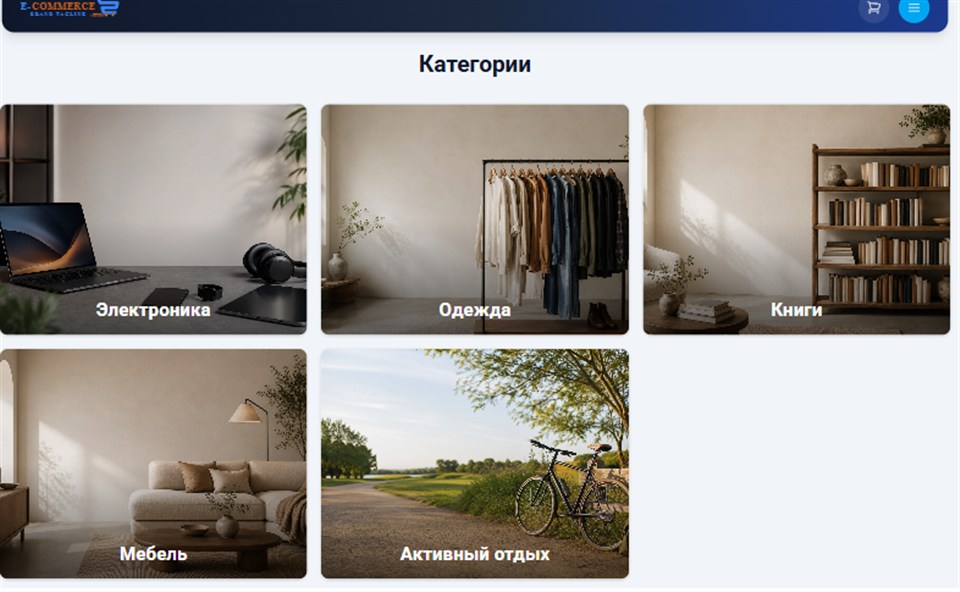
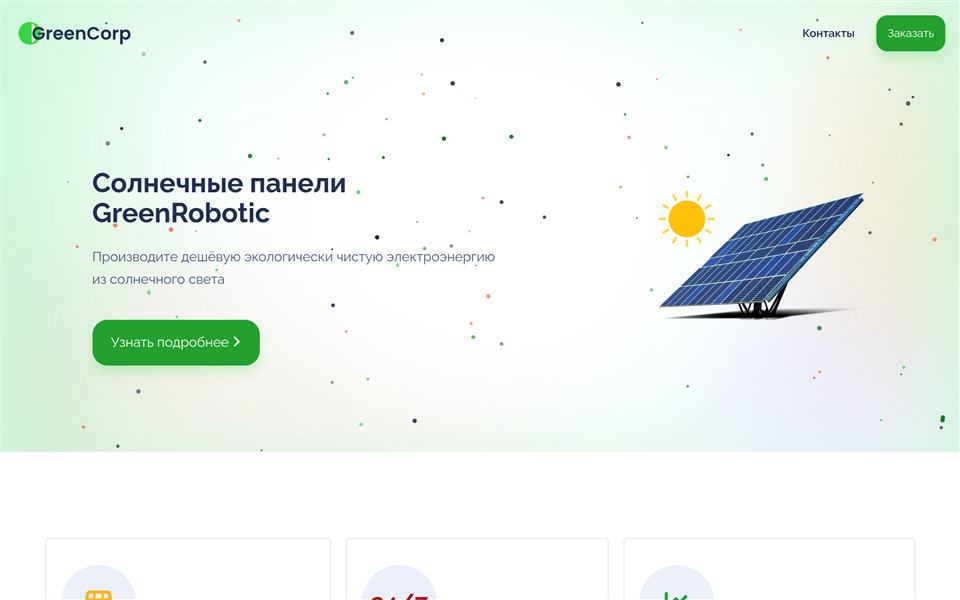
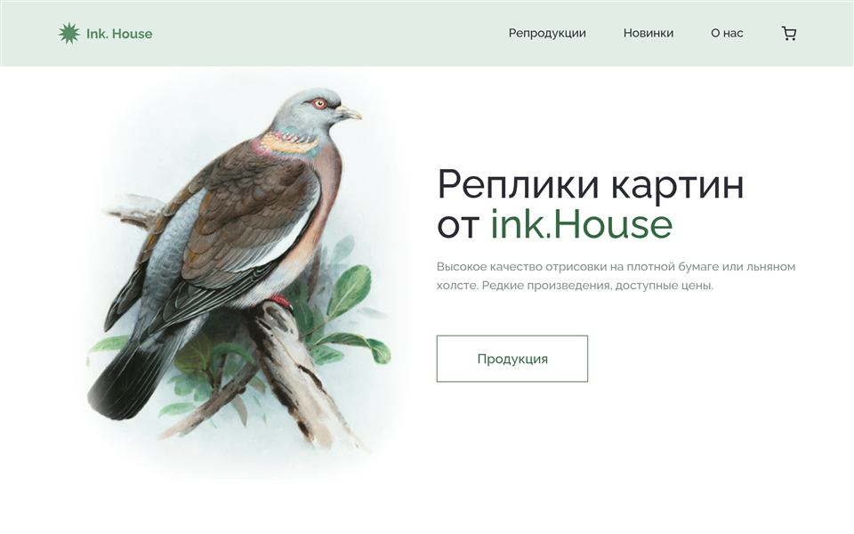

«Понравилось, что не пришлось пересказывать задачу трём разным людям — просто написал в Telegram, и мы сразу начали работать»
— из переписки с клиентом, digital-продукт
Фронтенд-разработчик
Я фронтенд-разработчик. Делаю сайты и лендинги для стартапов, локального бизнеса и личных проектов — там, где нужен рабочий сайт, а не месяцы согласований. AI помогает с черновиками текста и визуала, сборку и качество держу на себе.
Можно просто написать — ни к чему не обязывает.
Прозрачно
показываю макет и структуру до вёрстки
Гибко
меняем детали по ходу, без формальных заявок
Агентство — это несколько человек и время на передачу задачи между ними. Здесь один человек ведёт проект от начала до конца — меньше слоёв, меньше шанс, что что-то потеряется по дороге.
«Понравилось, что не пришлось пересказывать задачу трём разным людям — просто написал в Telegram, и мы сразу начали работать»
— из переписки с клиентом, digital-продукт
0
отговорок: если что-то не так — это моя ответственность, а не «менеджер не передал»
Бюджет
Без наценки за агентство — платите за работу, которую видите в проекте
Гибкость
Захотелось поменять блок или текст после сдачи? Просто пишете — без нового ТЗ и согласований
Контроль
Каждый экран прохожу сам, от макета до финальной проверки — ничего не уходит «как получится»
Пять шагов, один и тот же человек на каждом — без замены дизайнера на верстальщика на полпути.
Бриф
Списываемся или созваниваемся, чтобы разобраться, что должен делать сайт и для кого он.
Структура
Раскладываю лендинг по смыслу: что человек видит сначала, что — потом, и что должно его убедить.
Дизайн
Собираю визуальное направление — цвет, шрифты, композицию — и показываю, прежде чем сажусь верстать.
Разработка
Верстаю, настраиваю адаптивность и анимации, подключаю форму и всё, что должно работать.
Запуск
Публикуем, проверяем на разных устройствах и договариваемся, как быть с правками дальше.
Давайте познакомимся.
Я Дмитрий. Не собираю сайты по шаблону с новым логотипом сверху — сначала вникаю, зачем он вообще нужен, и только потом сажусь за макет. AI забирает часть черновой работы, но что оставить, а что переписать — решаю сам, глядя на то, что получилось.
Чем занимаюсь
Практические проекты, которые довёл до рабочего результата — от макета до кода.



Не обещаю того, чего не смогу сделать, и говорю сразу, если идея не сработает — даже если это не то, что хочется услышать. Если берусь за проект, довожу его до конца: не пропадаю на середине и не переключаюсь на что-то более интересное.
Расскажите о задаче в двух словах — и посмотрим, подходит ли это друг другу.
Данные нужны только для ответа — никуда больше не уходят.